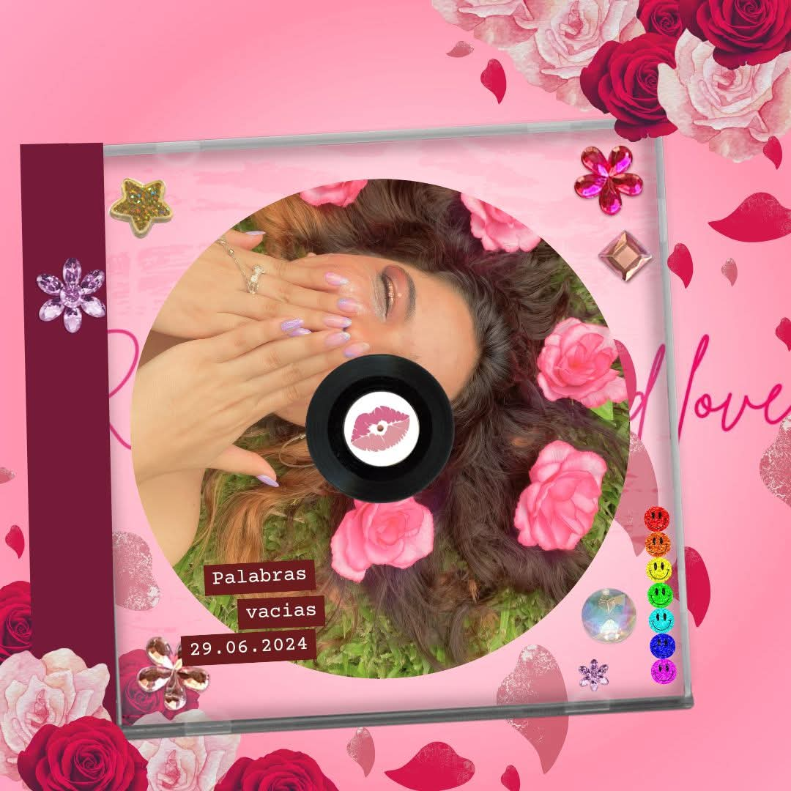

Historia detrás de Contraste
Contraste nace a partir de una relación que permanecia en pie por la necesidad de llegar a sentirse amada en algun punto de la relación ya que tiempo atrás un tercero involucrado perjudicó lo que poco a poco se habia construido. ¿Quien fue el culpable? ¿Por que si sabia que tenia una relación decidió meterse en ella? ¿Mi presencia, mi amor y lo que fui no eran suficientes para ti? ¿Qué me falto hacer, a caso sacarme el corazón y dartelo de comer? Porque sin dudarlo lo hubiera hecho solo por sentir que me elegía a mi, que no era una opción, que era solo yo.
luche dia a dia con la inseguridad, con la incertidumbre si al despertar yo seguiría siendo una opción
Un día decidí expresar lo que mi boca callaba y lo que mi corazón negaba, que a pesar de tanto amor, habia rencor, habia rabia, habia odio, solo estaba alli por migajas... migajas de amor.
El motivo de llamarse contraste es por lo que gritaba mi corazon y escondia la razón, era una pelea interna de aferrarme a un imposible, ya nada era igual, ya no era esa persona de la que me enamoré, cuando lo veía no podia reconocerlo, era ver a muchas personas al mismo tiempo y sé que él pensaba igual al fijar sus ojos en mi, físicamente era yo pero él veia a alguien mas que no podia reconocer en mi rostro.
Blanco, negro, feliz, triste, querer y al mismo tiempo no querer, colores, olores, sensaciones, todo... todo se volvió opuesto, todo se volvió un agotador y ruidoso contraste

Palabras vacias
Escuchar en YouTube

Acuarelas color marrón
Escuchar en YouTube